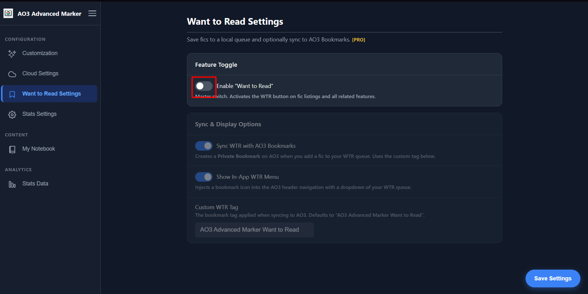
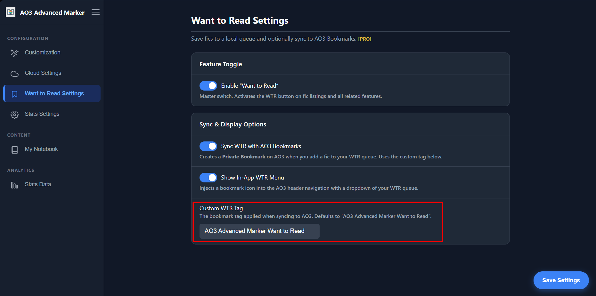
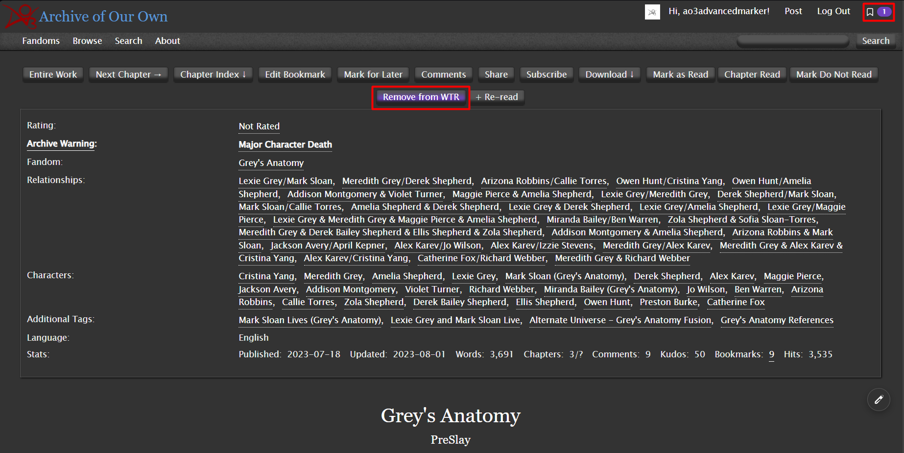
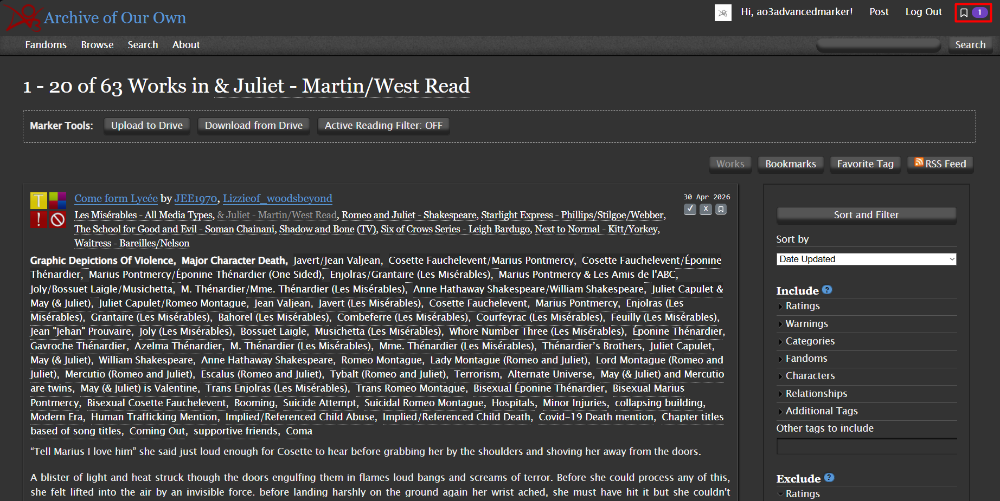
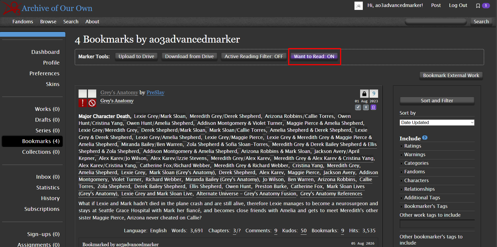

The Want to Read (WTR) system is a premium feature designed to help you keep track of fanfics you are interested in but haven't started yet. Instead of cluttering your browser tabs, you can add them to a dedicated queue built right into the AO3 interface.
Enabling the WTR System
Before you can use the WTR system, you must activate it in the extension's settings.
Open the extension's Options Page and navigate to the Want to Read tab in the sidebar. Toggle the "Enable Want to Read (WTR) System" switch to turn the feature on. This is the master switch for all WTR functionalities.

Customizing the AO3 Bookmark Tag
If you have enabled "Sync to AO3 Bookmarks" in the WTR settings, the extension will automatically create a private bookmark on AO3 when you queue a work. By default, it tags these bookmarks with "AO3 Advanced Marker Want to Read".
You can change this tag to anything you prefer (like "TBR" or "To Read") using the "Custom WTR Tag" input field in the WTR settings page. Changing this tag will apply to all future works added to the queue.

Adding Works to your Queue
Once enabled, you will notice new WTR buttons seamlessly integrated into AO3.
Button Breakdown
- Bookmark Icon (Listings/Blurbs): Found next to the ✔ (Read) and ✕ (Do Not Read) buttons on search results. Clicking it adds the work to your WTR queue without opening it. It turns solid to indicate the work is queued.
- "Want to Read" Button (Work Page): Found at the top and bottom navigation bars inside a specific work. Clicking it queues the work and highlights the button with the WTR color.
- "Remove from WTR" Button (Work Page): If a work is already in your queue, the button changes to this active state. Clicking it removes the work from your backlog.

If you have already started reading a work (it is marked as Partial or Read), the WTR buttons will be automatically grayed out and disabled to prevent conflicts. WTR is strictly for unread works!
Accessing your Queue
Finding the fanfics you've saved is easy. The extension offers two powerful ways to access your WTR list.
The Header Dropdown
Look at the very top of your AO3 page (in the main navigation header). A new Bookmark Dropdown will appear alongside your username and standard AO3 links. This dropdown shows a counter of your queued works and allows you to quickly access them from any page.

The WTR Filter on Bookmarks
Navigate to your personal AO3 Bookmarks page (/users/YOUR_USERNAME/bookmarks). You will see a button labeled "Want to Read: OFF".
Clicking this button toggles the WTR Filter ON. When active, it hides all your standard bookmarks and displays only the works in your WTR queue. This is perfect for when you're specifically looking for something new to start reading.

Automatic Cleanup
You don't need to manually manage your WTR queue! When you finally start reading a work and click "Chapter Read" or "Mark as Read", the extension automatically detects that the work is in your WTR queue and removes it seamlessly.
This means your queue stays clean automatically as you make progress on your backlog.